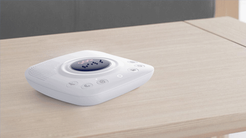
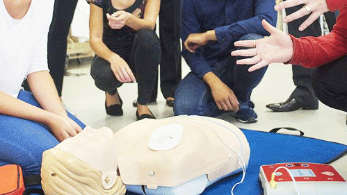
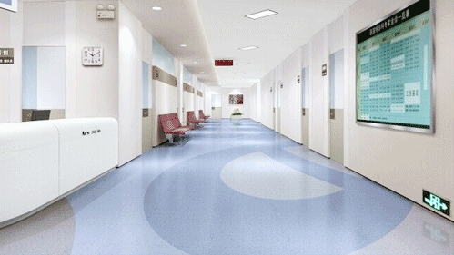

主页
救助系统介绍
我们如何救助
您的风险评估
产品购买
新闻链接
关于我们
一个可靠的急救警报系统有多重要？最重要的三个帮助措施
步骤1
危机情况
触发按钮
最快捷的救助方法，只要还能按动按钮，您就立刻得到了获救机会
步骤2
多团队协作
共同救助
多个救助团队分头行动，节约分分秒秒，让您获得更多的抢救时间
步骤3
预定制方案
精准转运
个体化急救预案，急救卡，精准转运，快速获得专业救助

只要还有力气，请立刻触发按钮
根据您选择的我们的个人紧急医疗警报系统，您的轻量级防水医疗警报按钮可以戴在脖子、手腕或皮带夹上。这样，即使在淋浴时，您也可以随时轻松舒适的佩带。
此外，无论您是度假、探亲还是朋友，还是永久在美国境内的任何地方旅游，您都可以轻松携带您的医疗监护人警报系统。您所要做的就是通知我们的客户服务团队您的位置，就这么简单。
按下按钮后
当按下时，您的设备立即发送无线信号给医疗监护人的24/7监控中心，提醒他们紧急情况。为了确保您的设备在您最需要的时候能够在您身边，以下是我们监控设备的一些方法：
1、远程测试以验证您的医疗警报按钮是否与您的家用系统同步
2、低电量通知，以防止任何失误的保护
3、识别您的移动设备的当前位置，以确认可以像您发送帮助
不仅仅是一个调度
与我们的团队沟通，在按下医疗警报按钮的瞬间，您将连接到一个高度认证的操作员。所有医疗卫士的操作员都接受强化训练，以便他们能够处理任何情况，甚至那些不需要紧急人员的情况。
当您注册我们的顶级服务时，我们会帮助您创建您自己的CareCircle,这是我们保存的紧急联系人列表。当您使用您的医疗警报系统时，这使我们的操作员呼叫您的护理圈子的家庭或其他成员。
现场紧急指导
监测中心的快速反应可能是紧急情况下的生与死之间的差异。但是，在不需要EMT的情况下，只要知道当您按下医疗警报按钮时，一个友好的声音将始终存在，同样重要。
事实上，我们运营商比EMT，警务人员和消防员加起来更经常派遣非紧急任务。因此，无论您是想要一个朋友或邻居在您身边办理登机手续，还是您只需要一个人的耳朵，都可以在任何情况下使用您的医疗监护系统。

急救档案卡
根据您选择的我们的个人紧急医疗警报系统，您的轻量级防水医疗警报按钮可以戴在脖子、手腕或皮带夹上。这样，即使在淋浴时，您也可以随时轻松舒适的佩带。
此外，无论您是度假、探亲还是朋友，还是永久在美国境内的任何地方旅游，您都可以轻松携带您的医疗监护人警报系统。您所要做的就是通知我们的客户服务团队您的位置，就这么简单。
精准转运绿色通道
当按下时，您的设备立即发送无线信号给医疗监护人的24/7监控中心，提醒他们紧急情况。为了确保您的设备在您最需要的时候能够在您身边，以下是我们监控设备的一些方法：
1、远程测试以验证您的医疗警报按钮是否与您的家用系统同步
2、低电量通知，以防止任何失误的保护
3、识别您的移动设备的当前位置，以确认可以像您发送帮助

一个小小的设备，是生命的机会，是幸福的保障
整站搜索